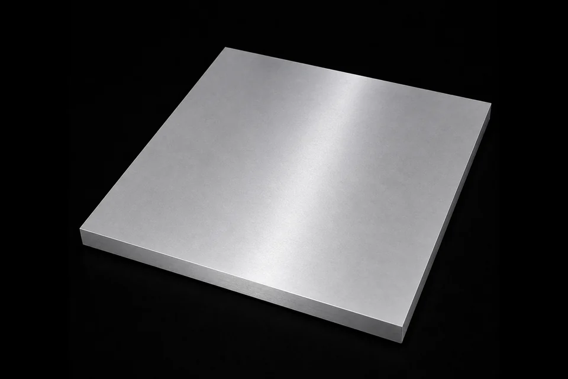

PVD Coating Materials / Sputtering Targets
Aluminium Neodymium Alloy Target
铝钕合金靶
Specifications
| Product Name | Aluminium Neodymium Alloy Target |
|---|---|
| Chinese Name | 铝钕合金靶 |
| Product Line | PVD Coating Materials |
| Category | Sputtering Targets |
| Formula / Composition | Al-Nd |
| Purity | 99.9%~99.99% |
| Standard Size | Long side < 2200mm |
| Packaging | 覆膜 |
| Customization | 是 |
Product Features
方形
정사각형
Applications
高纯铝钕合金靶材核心用于显示面板TFT金属布线、OLED反射电极，完美解决纯铝薄膜高温凸起缺陷，同时作为成熟制程半导体铝互连、晶圆焊盘导电层，提升面板与芯片长期可靠性。 还可沉积MRAM磁性存储薄膜、光伏电池背电极、红外光学反射膜、车载磁传感镀层，广泛覆盖柔性电子、第三代半导体与磁性材料研发。
High-purity aluminum-neodymium alloy targets are mainly used for TFT metal wiring in display panels and OLED reflective electrodes, helping solve hillock defects in pure aluminum films at high temperature. They are also used as aluminum interconnects and wafer pad conductive layers in mature semiconductor processes to improve long-term panel and chip reliability. The material can also be deposited for MRAM magnetic storage films, photovoltaic back electrodes, infrared optical reflective films, and automotive magnetic sensor coatings, covering flexible electronics, third-generation semiconductors, and magnetic-material research.
고순도 알루미늄-네오디뮴 합금 타겟은 주로 디스플레이 패널의 TFT 금속 배선 및 OLED 반사 전극에 사용되며 고온에서 순수 알루미늄 필름의 힐록 결함을 해결하는 데 도움이 됩니다. 또한 장기적인 패널 및 칩 신뢰성을 향상시키기 위해 성숙한 반도체 공정에서 알루미늄 인터커넥트 및 웨이퍼 패드 전도성 층으로 사용됩니다. 또한 이 재료는 유연한 전자 장치, 3세대 반도체 및 자성 재료 연구를 포괄하는 MRAM 자기 저장 필름, 광전지 후면 전극, 적외선 광학 반사 필름 및 자동차 자기 센서 코팅용으로 증착될 수 있습니다.
RFQ Checklist